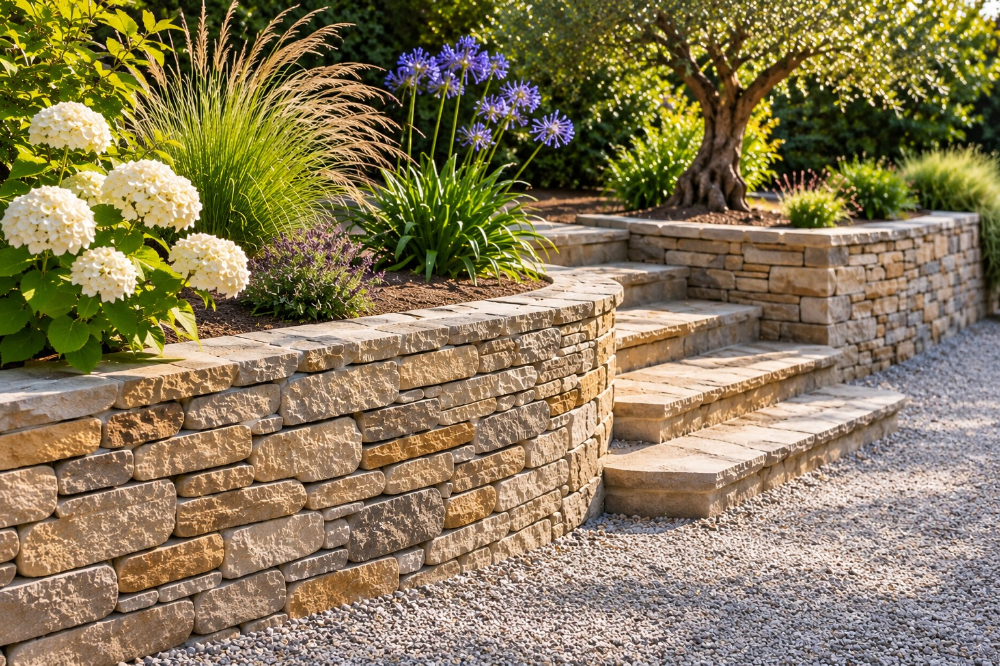
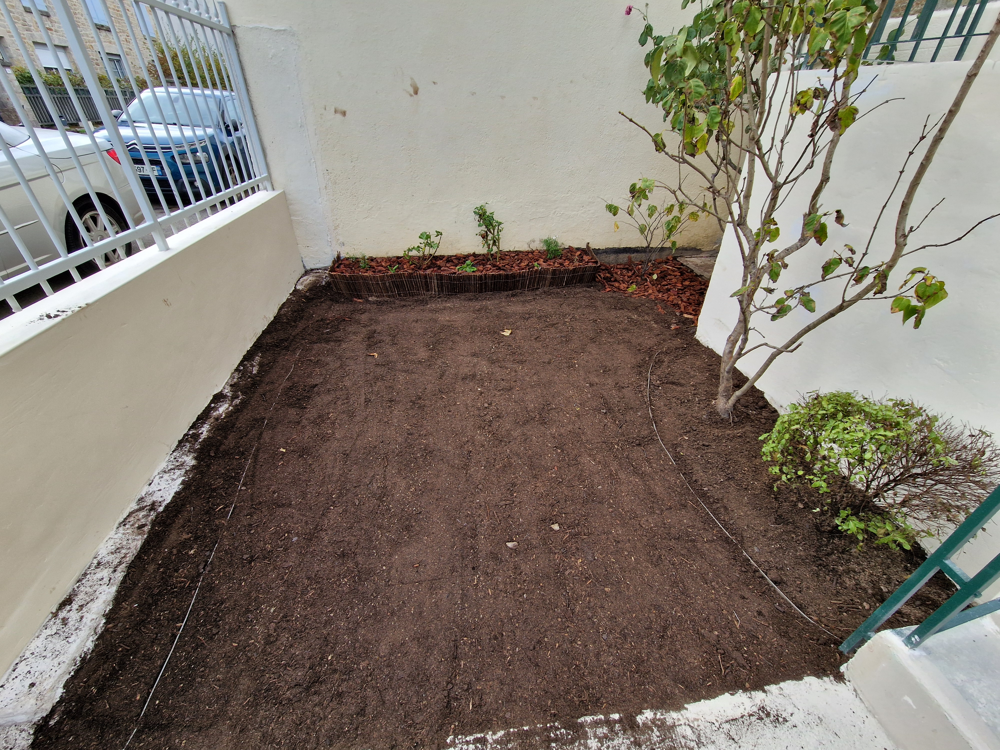
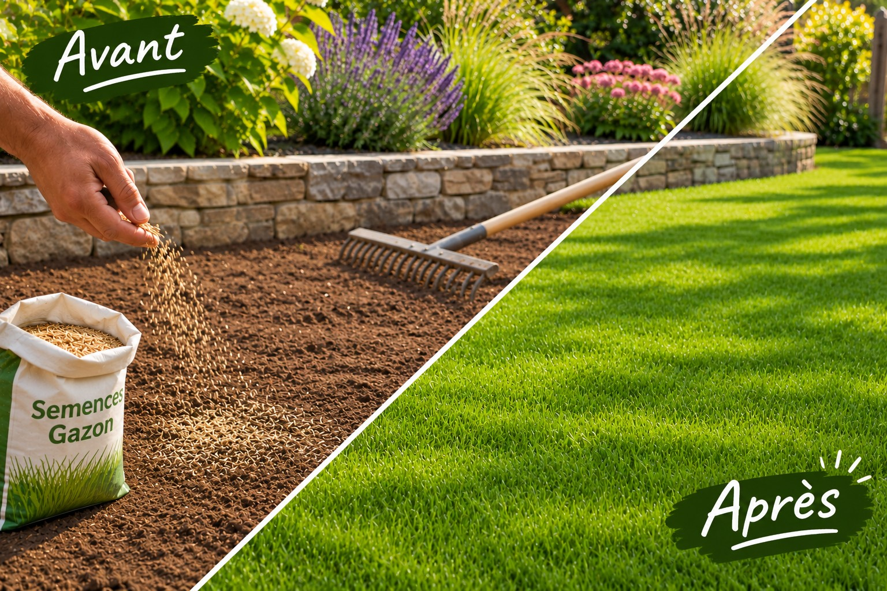
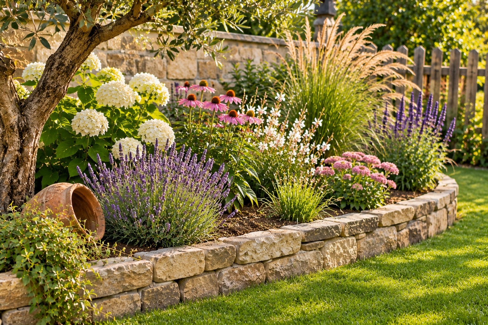
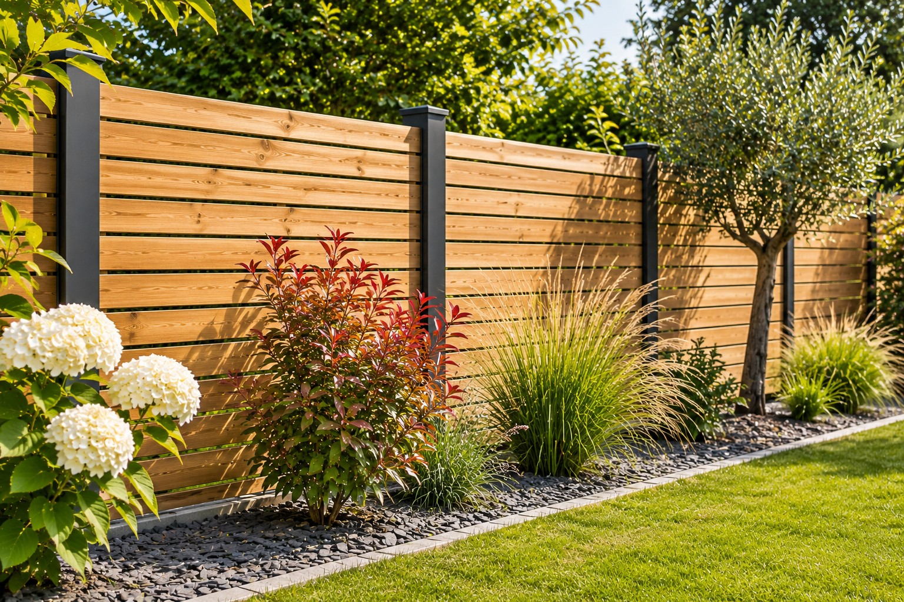

Maçonnerie paysagère
Structurez et valorisez votre jardin avec des aménagements paysagers adaptés à votre terrain.
Edénélia · Création paysagère
Donnons vie à vos projets grâce à des aménagements extérieurs soignés, harmonieux et adaptés à vos envies.
Demander un devis →Des solutions pour aménager et embellir vos espaces extérieurs.

Structurez et valorisez votre jardin avec des aménagements paysagers adaptés à votre terrain.

Préparez et façonnez votre terrain pour accueillir vos futurs aménagements extérieurs.

Apportez une touche de verdure à votre extérieur avec la création de votre pelouse.

Apportez du caractère à votre jardin grâce à des massifs végétalisés et harmonieux.

Délimitez et valorisez votre propriété avec une clôture adaptée à votre extérieur.
Échangeons ensemble sur vos envies et imaginons un extérieur qui vous ressemble.
Parlons de votre projet →